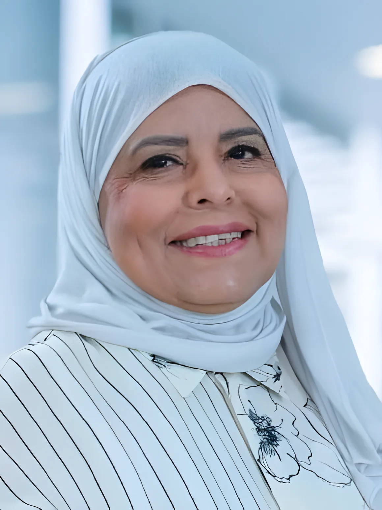
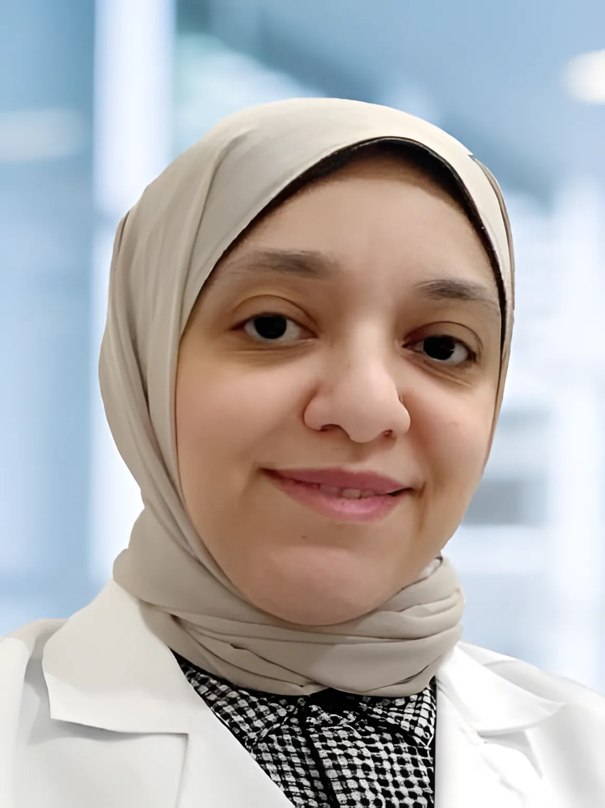
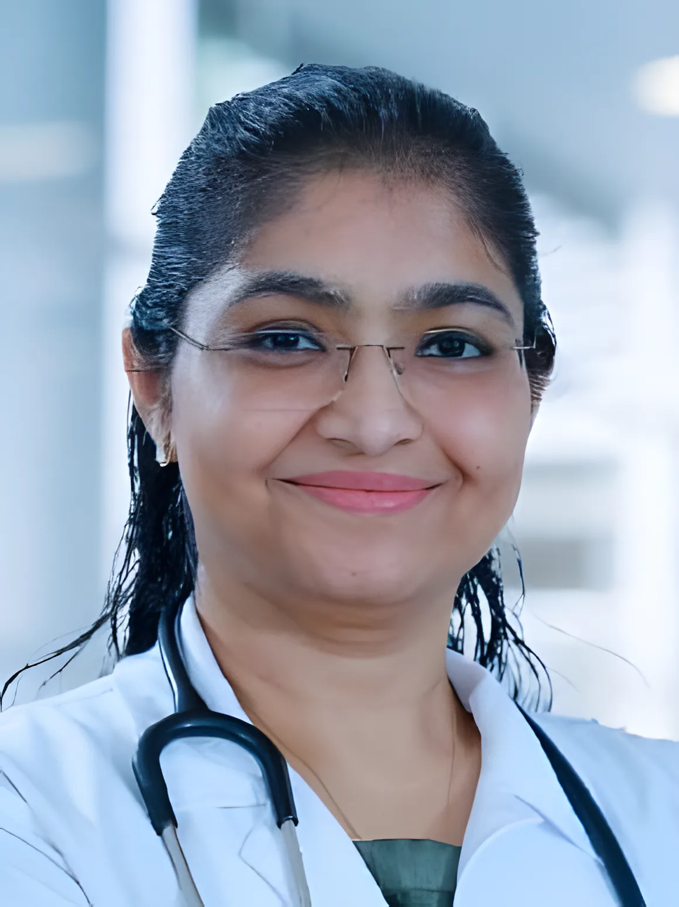
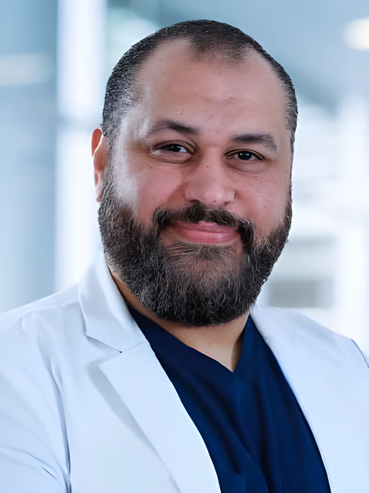
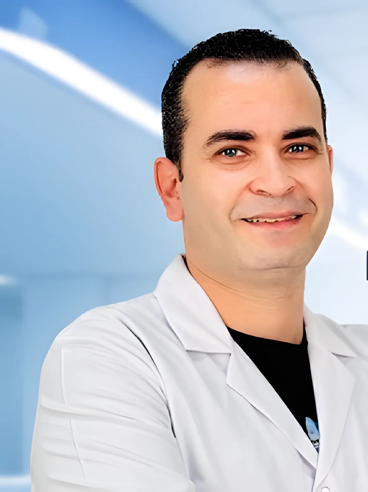
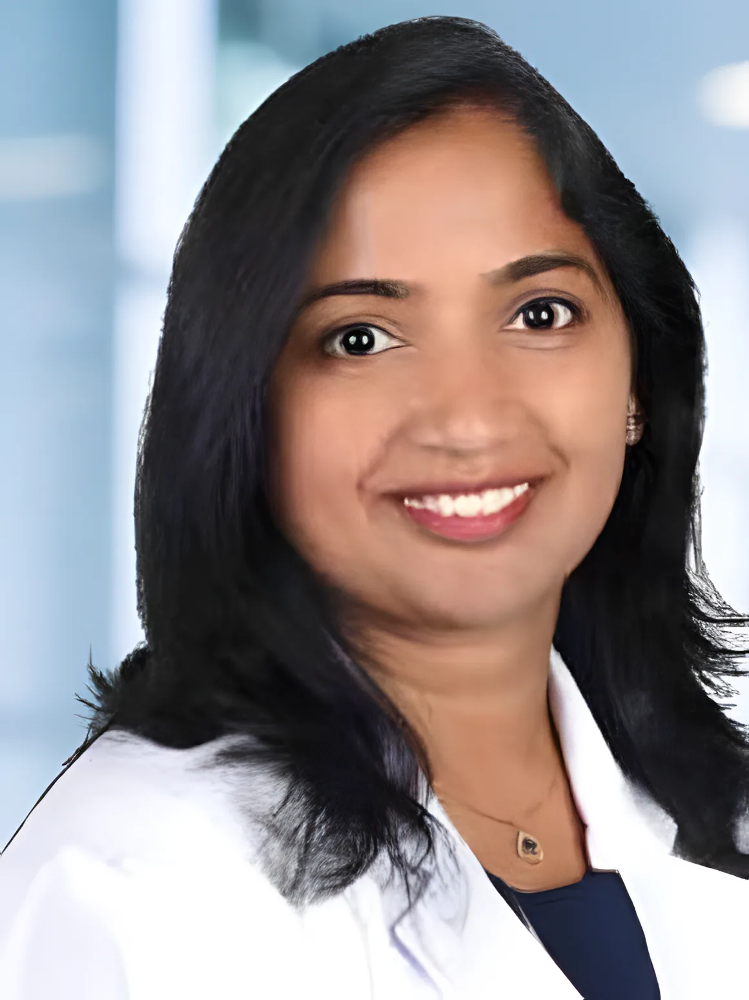
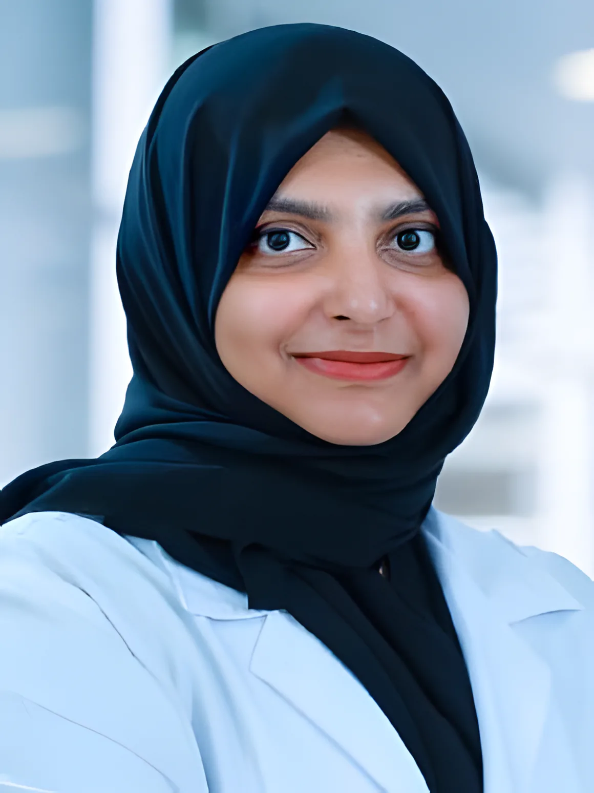

أربعة عشر قسمًا في مبنى واحد بشارع بغداد. كل قسم تحت يوضح ماذا يعالج الطبيب، وماذا نسوي في العيادة، ومن الطبيب اللي بتشوفه. احجز أي قسم على واتساب أو بالتلفون.
الغدد الصماء والهرمونات
أول أقسامنا، تشرف عليه الدكتورة لطيفة الدويسان منذ 15 أكتوبر 1994. تحاليل الهرمونات في مختبرنا وسونار الغدة في قسم الأشعة، فأغلب المرضى يطلعون بإجابة في زيارة وحدة.
ماذا نعالج
- أمراض الغدة الدرقية
- أمراض الغدة النخامية
- تكيس المبايض
- اضطرابات هرمونية أخرى
في العيادة
- تحاليل هرمونات في مختبر مرخّص من وزارة الصحة
- سونار الغدة الدرقية والنخامية والمبايض
- خطة علاج مكتوبة لك

التغذية
جلسات فردية مع أخصائية التغذية ونظام غذائي مبني على نتائجك. خط التغذية: 6603 7930.
ماذا نعالج
- السكر والقلب والضغط
- الكبد الدهني والسمنة والنحافة
- الحمل والرضاعة
- بعد عمليات السمنة
- متابعة مونجارو وأوزمبيك
في العيادة
- استشارات تغذية
- أنظمة غذائية
- إدارة الوزن
- تغذية رياضية

النساء والولادة
رعاية للمرأة في كل الأعمار، من اضطراب الدورة عند البنات إلى الحمل وسن اليأس. سونار الحمل والحوض داخل العيادة.
ماذا نعالج
- تأخر الإنجاب
- الحمل عالي الخطورة وسكر الحمل
- تكيس المبايض
- سن اليأس
- الإجهاض المتكرر
في العيادة
- متابعة الحمل والسونار
- سونار مهبلي
- موانع الحمل
- عيادة الثدي

الأطفال
لحديثي الولادة والأطفال والمراهقين: فحوصات وتطعيمات وزيارات المرض. الصفار نقيسه بجهاز على الجلد بدون سحب دم.
ماذا نعالج
- رعاية حديثي الولادة
- ربو الأطفال
- الأمراض الحادة والمزمنة
- النمو والتطور
في العيادة
- التطعيمات
- قياس الصفار بدون إبرة
- تقييم النمو
- نصائح تغذية الأطفال

الباطنية والطب العام
عادة أول موعد للكبار. ثلاثة أطباء: د. أحمد سالم السعيد (باطنية)، د. أرون كومار ود. نيتين سيفاداس (طب عام).
ماذا نعالج
- السكر والضغط
- المعدة والقولون
- الكبد والقلب والمناعة
- الربو وفقر الدم ونقص الفيتامينات
- الحساسية والتهابات الصدر
في العيادة
- باقات الفحص الشامل
- فحوصات وقائية
- متابعة الأمراض المزمنة

الأنف والأذن والحنجرة
للكبار والأطفال، مع فحص بالمنظار واختبارات السمع هنا في العيادة.
ماذا نعالج
- التهابات الأذن
- اللوز واللحمية عند الأطفال
- الجيوب الأنفية والرعاف
- ضعف السمع
- الدوخة والدوار
- الصوت والبلع
في العيادة
- فحص بالمنظار
- اختبارات السمع
- فحص الحساسية
- تنظيف الأذن

الجلدية والليزر
علاج الأمراض الجلدية عند أخصائي جلدية، وغرفة ليزر لإزالة الشعر وعلامات التمدد.
ماذا نعالج
- حب الشباب والإكزيما والصدفية
- التهابات وحساسية الجلد
- الشامات والزوائد الجلدية
- تساقط الشعر والقشرة
في العيادة
- إزالة الشعر بالليزر: الوجه والساقين والإبط والذقن
- علاج علامات التمدد
- خطة عناية حسب نوع بشرتك
التجميل
علاجات نضارة البشرة، كل علاج بعد استشارة وبخطة لبشرتك.
ماذا نعالج
- التجاعيد والخطوط
- التصبغات والكلف
- تساقط الشعر
- ملمس البشرة
في العيادة
- تقشير كيميائي
- فيلر وبوتوكس
- ميزوثيرابي
- إبر دقيقة
- هيدرافيشل
المسالك البولية والذكورة
تشخيص وعلاج مشاكل المسالك والصحة الإنجابية للرجال، للكبار والأطفال.
ماذا نعالج
- حصى الكلى والحالب
- البروستاتا
- التحكم بالمثانة
- الضعف الجنسي
- العقم عند الرجال
في العيادة
- مناظير المسالك
- مسالك الأطفال
- طب الذكورة
الأسنان
طب أسنان عام لكل العائلة، والأطفال، وحالات الطوارئ.
ماذا نعالج
- ألم الأسنان والطوارئ
- مشاكل اللثة
- صرير الأسنان
- الأسنان المفقودة
في العيادة
- فحص وتنظيف
- حشوات وخلع
- علاج عصب
- تيجان وجسور وأطقم
- تبييض وفينير

المختبر
مختبرنا مرخّص من وزارة الصحة، من 8 صباحًا إلى 6 مساءً، والنتائج توصل لطبيبك مباشرة.
ماذا نعالج
- تحاليل الهرمونات
- تحاليل الدم
- تحاليل الميكروبات والالتهابات
- الخزعات وفحص الأنسجة
- التشخيص الجزيئي
الأشعة
أشعة رقمية وسونار وكثافة عظام وماموغرام، يقرأها أخصائي الأشعة عندنا.
ماذا نعالج
- أشعة العظام والمفاصل والصدر والبطن
- سونار الكبد والكلى والغدة والحمل والأوعية
- كثافة العظام DEXA: الورك والعمود الفقري والساعد
- ماموغرام للفحص والتشخيص
قبل الفحص
- أغلب الأشعات بدون تحضير؛ انزع المجوهرات والمعادن
- أخبرنا إذا ممكن تكونين حامل
- DEXA: تستلقي بهدوء بدون أي ألم
- الماموغرام حوالي 15 دقيقة، سنويًا من عمر 40
صيدلية جوهرة السالمية
الصيدلية داخل العيادة. السبت إلى الخميس 8 ص إلى 9:30 م، الجمعة 9 ص إلى 9 م. واتساب 5155 9745 أو اتصل 2572 7004 تحويلة 310.
ماذا نعالج
- الأدوية والوصفات
- الفيتامينات والمكملات
- العناية بالبشرة والشعر والفم
- الأم والطفل
في العيادة
- صرف الوصفات
- استشارة دوائية
- نصائح الأدوية بدون وصفة
- تذكير بإعادة الصرف